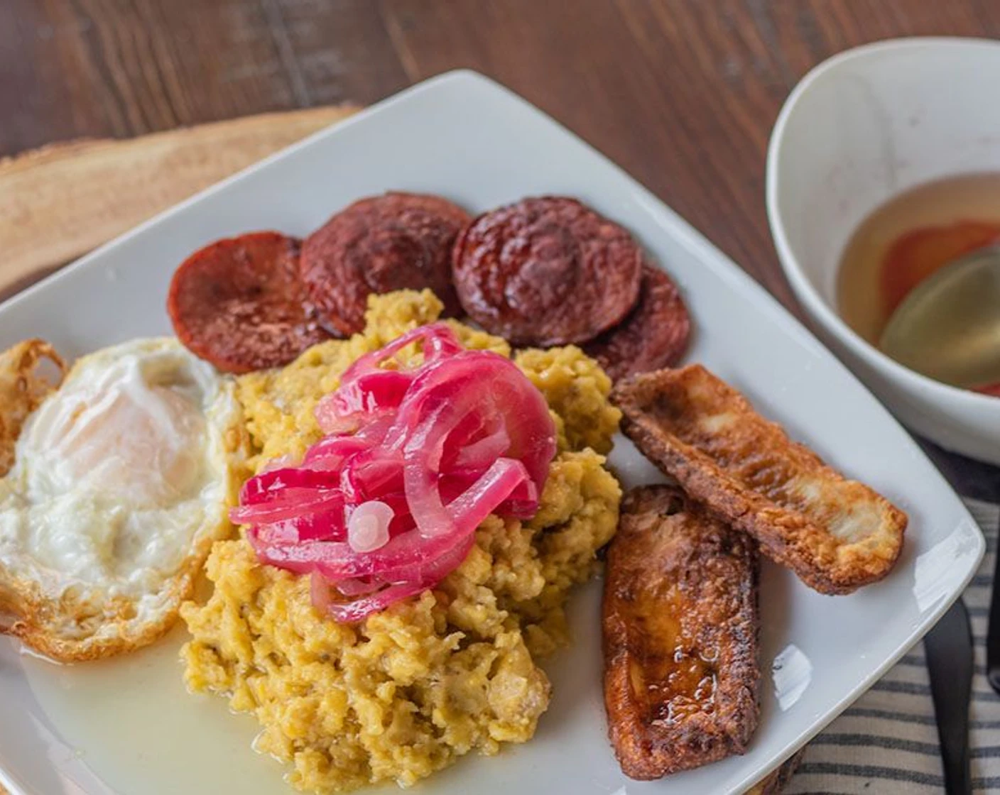
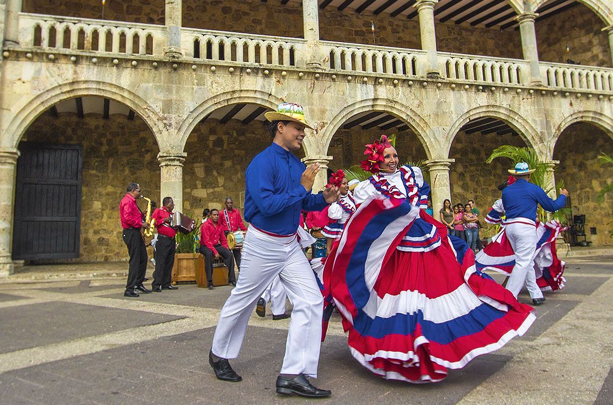

The Dominican Republic
Why should you visit?
From beaches, food and culture, so many places to see and foods to eat!
Beaches

Also known as " Bacardi Island" due to the palm trees being featured in the commercial for Barcadi in the 70s
- Located in Samana Bay, this small island offers the ideal island gateaway
- Gorgeous crystaline water you can see through and sparkling white sand, you can relax and enjoy the sun during the day
- And at night enjoy some freshly caught Pescado Frito or fried fish for dinner.
Playa Esmeralda

- The arrival of Leatherback turtles
- Explore the coconut groves
- Get a taste of the all-natural and fresh vegetation
Besides exploring the natural environment of Playa Esmeralda, Club Miches offers many exhilirating activities to do such as:
- Paddle Boarding
- Archery
-
A trapeze on the beach to offer you a once in a lifetime opportunity and get a unique overview of the palm trees from high above, gliding through the clouds.
If you're not one for heart racing adventures, some more zen alternatives are:
- Aerial Yoga
- Treetop Yoga
- Aerobics class
- And if working out is more your style, you can check the out the weight room
Barcelo Bavaro Beach

Bavaro Beach considered to be one of the 10 most beautiful beaches in the world, will amaze you with its clear blue skies, and even clearer ocean, you can look down and will catch a glimpse of friendly fish
Besides its beautiful beach, the marvelous and luxurious Barcelo Resort, on the beachfront of Bavaro beach elevates the experience by offering:
- A relaxing Spa
- Diverse buffet and dining options
- Evening entertainment
- Saltwater and an infinity pool
- Accommodations if needed for hotel stay
- Family accommodations as well if needed
Food
La Bandera or The Flag

The traditional dish of The Dominican Republic, "La Bandera" or " The flag", known for it's vibrant red beans, fluffy white rice and delicious Pollo guisado or braised chicken served on the side
Lovingly referred to as " La Bandera", symbolizing the homey and welcoming environment of The Dominican Republic
It may not be the expected dish at a 5 star restaurant, but after one bite, you will see why this simple but delicious delish, is the culinary representative of The Dominican Republic
Mangu Con Los Tres Golpes

From creamy smashed Plantains, to 3 crunchy, fried varieties, what more could you want?
- Fried Salami
- Fried egg
- Fried Dominican Cheese
May seem like an odd combination at first, until you take a risk and give it a chance!
The pickled red onions on top of the mangu or smashed plantains, draws out the flavors of the plantain and spices used
Pescado Frito or Fried Fish

Culture
La Zona Cololonial or The Colonial Zone

The oldest inhabited european-established settlement in Latin America
From its historic cobblestone streets
To the centuries-old buildings
You can travel back to the past, while remaining in the present
It has walking accessibility,making it easy to walk from one location to another
Some places to check out while exploring The Colonial Zone are:
The House of Columbus
Basilica Cathedral of Santa Maria la Menor
Calle Las Damas or The street of Ladies ( oldest street of Latin America)
Church and Convent of the Dominican Order (The oldest church in the New World)
Monasterio de San Francisco or The Monastery of St Francis
Even though The Colonial Zone is not your typical touristy attraction, it is important to visit and learn about the island's history and culture
Click here for Additional info!
Considered to be the national dance of The Dominican Republic
Merengue is known for it's variety in tempos and lively rhythm
Merengue is the type of dance that makes you wanna get up and dance!
The official origin of Merengue is not clear, however there are 2 theories
- The first origin story describes a hero who came home after being in one of the revolutions that occurred in The Dominican Republic, He had a leg injury and since guests welcomed him with a lively party, they wanted to empathize with him and danced limping and dragging one foot.
- The second origin story speculates that Merengue became popular after it was shown on a Tv program "Santo Domingo Invita"
- Additionally, it was also believed that Merengue is a combination of The African and French Minuet
Click here to learn how to dance Bachata!
Unlike Merengue, Bachata's origins are slightly more clear
It came about during the 1960's
However, Trujillo's dictatorship over The Dominican Republic, was also growing
He viewed Bachata as "vulgar" and essentially, looked down on it and banned Bachata music and dance
Despite the ban, the people would still listen to and dance Bachata in bars and brothels
Bachata's rhythm is slower and has more footwork involved
A key feature of Bachata is the female dancer's hip movements
Bachata is more of a one, two, three, hip count
Bachata has a sensual feel to it and may be intimidating at first, but if you give it a try, it will be fun!
As you can see, from the breathtaking beaches, delicious food and lively music, The Dominican Republic feels like home away from home. Offering unlimited island delights, take a chance and explore!